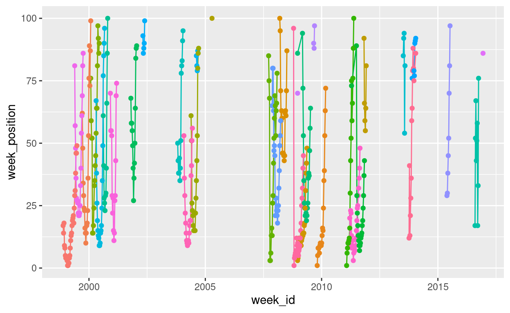

I’ve never participated in Tidy Tuesday before, but because I’ve now joined a slack that does, it is high time I did something about that poor track record. I wasn’t sure what I wanted to do with this week’s “Billboard” data, other than I wanted it to have something to do with Britney Spears (because she’s awesome). After going back and forward for a while, I decided what I’d do is put together a couple of plots showing the chart performance of all her songs and – more importantly – write it up as a blog post in which I try to “over-explain” all my choices. There are a lot of people in our slack who haven’t used R very much, and I want to “unpack” some of the bits and pieces that are involved. This post is pitched at beginners who are hoping for a little bit of extra scaffolding to explain some of the processes…
Finding the data on GitHub
Every week the Tidy Tuesday data are posted online, and the first step in participating is generally to import the data. After a little bit of hunting online, you might discover that the link to the billboard data looks like this:
Let’s start by unpacking this link. There is a lot of assumed knowledge buried here, and while it is entirely possible for you to get started without understanding it all, for most of us in the slack group the goal is to learn new data science skills. At some point you are probably going to want to learn the “version control” magic. This post is not the place to learn this sorcery, but I am going to start foreshadowing some important concepts because they will be useful later.
GitHub repositories
The place to start in understanding this link is the peculiar bit at the beginning: what is this “github” nonsense? The long answer is very long, but the short answer is that https://github.com is a website that programmers use to store their code. GitHub is one of several sites (e.g., https://gitlab.org, https://bitbucket.com) that built on top of a system called “git”. Git is a powerful tool that lets you collaborate with other people when writing code, allows you to keep track of the history of your code, and to backup your code online in case your laptop mysteriously catches on fire. It takes quite some time to get the hang of (I’m still learning, quite frankly), but it is worth your effort. When you have time, I recommend starting a free GitHub account. You can sign up using an email address, and if you have a university email address you get the educational discount (basically you get the “pro” version for free). My username on GitHub is djnavarro, and you can find my profile page here:
The Tidy Tuesday project originated in the “R for data science” learning community (R for data science is a wonderful free resource written by Hadley Wickham and Garrett Grolemund), and there is a profile page for that community too:
https://github.com/rfordatascience
Okay, so that’s part of the link explained. The next thing to understand is that when you create projects using git and post them to GitHub, they are organised in a “repository” (“repo” for short). Each repo has its own page. The Tidy Tuesday repo is here:
https://github.com/rfordatascience/tidytuesday
If you click on this link, you’ll find that there’s a nice description of the whole project, links to data sets, and a whole lot of other things besides. Most of the work organising this is done by Thomas Mock.
Repositories have branches
Whenever someone creates a git repository, it will automatically have at least one “branch” (usually called “master” or “main”). The idea behind it is really sensible: suppose you’re working on a project and you think “ooooh, I have a cool idea I want to try but maybe it won’t work”. What you can do is create a new “branch” and try out all your new ideas in the new branch all without ever affecting the master branch. It’s a safe way to explore: if your new idea works you can “merge” the changes into the master branch, but if it fails you can switch back to the master branch and pick up where you left off. No harm done. If you have lots of branches, you effectively have a “tree”, and it’s a suuuuuuper handy feature. Later on as you develop your data science skills you’ll learn how to do this yourself, but for now this is enough information. The key thing is that what you’re looking at when you visit the Tidy Tuesday page on GitHub is actually the master branch on the tree:
https://github.com/rfordatascience/tidytuesday/tree/master
Repositories are usually organised
The Tidy Tuesday repository has a lot of different content, and it’s all nicely organised into folders (no different to the folders you’d have on your own computer). One of the folders is called “data”, and inside the “data” folder there is a “2021” folder:
https://github.com/rfordatascience/tidytuesday/tree/master/data/2021
Inside that folder you find lots more folders, one for every week this year. If you scroll down to the current week and click on the link, it will take you here:
https://github.com/rfordatascience/tidytuesday/tree/master/data/2021/2021-09-14
Being the kind soul that he is, Thomas has included a “readme” file (that’s the nice human readable thing that gets displayed) underneath. Whenever you’re doing a Tidy Tuesday analysis, it’s super helpful to look at the readme file, because it will provide you a lot of the context you need to understand the data. Whenever doing your own projects, I’d strongly recommend creating readme files yourself: they’re really helpful to anyone using your work, even if that’s just you several months later after you’ve forgotten what you were doing.
In any case, one of the things you’ll see on that page is a link to the “billboard.csv” data. If you click on that link it will take you here:
https://github.com/rfordatascience/tidytuesday/blob/master/data/2021/2021-09-14/billboard.csv
Notice that this doesn’t take you to the data file itself: it goes to a webpage! Specifically, it takes you to the “blob” link that displays some information about the file (notice the “blob” that has sneakily inserted itself into the link above?). In this case, the page won’t show you very much information at all because the csv file is 43.7MB in size and GitHub doesn’t try to display files that big! However, what it does give you is a link that tells you where they’ve hidden the raw file! If you click on it (which I don’t recommend), it will take you to the “raw” file located at…
This is the link that you might have discovered if you’d been googling to find the Billboard data. It’s a GitHub link, but GitHub uses the “raw.githubusercontent.com” site as the mechanism for making raw files accessible, which is why that part of the link has changed.
The anatomy of the data link
All of this tedious exposition should (I hope) help you make sense of what you’re actually looking at when you see this link. In real life I would never bother to do this, but if you wanted to you could decompose the link into its parts. In the snippet below I’ll create separate variables in R, one for each component of the link:
site <- "https://raw.githubusercontent.com"
user <- "rfordatascience"
repo <- "tidytuesday"
folder1 <- "data"
folder2 <- "2021"
folder3 <- "2021-09-14"
file <- "billboard.csv"
One thing you might be wondering, when you look at this snippet, is where that pretty “arrow” character comes from. Don’t be fooled. It’s actually two characters. What I’ve actually typed is <-, but this blog uses a fancy pants font that contains a special ligature that joins the two characters together. The font is called “Fira Code”, and a lot of programmers use it on their blogs. Once you know the trick, it’s really nice because it does make the code a little easier to read, but it can be confusing if you’re completely new to programming! It’s one of those little things that people forget to tell you about :-)
Anyway, getting back on topic. The URL (“uniform resource locator”, a.k.a. “link”) for the Billboard data file is what you get when you paste all these components together, separated by the / character:
data_url <- paste(
site,
user,
repo,
folder1,
folder2,
folder3,
file,
sep = "/"
)
data_url
[1] "https://raw.githubusercontent.com/rfordatascience/tidytuesday/data/2021/2021-09-14/billboard.csv"Exciting stuff.
Packages
Packages I’m going to use a lot get attached:
Import the data
So I can read the data with the following code1
billboard <- readr::read_csv(params$data)
billboard
# A tibble: 327,895 × 10
url week_id week_position song performer song_id instance
<chr> <chr> <dbl> <chr> <chr> <chr> <dbl>
1 http://… 7/17/19… 34 Don't… Patty Du… Don't Ju… 1
2 http://… 7/24/19… 22 Don't… Patty Du… Don't Ju… 1
3 http://… 7/31/19… 14 Don't… Patty Du… Don't Ju… 1
4 http://… 8/7/1965 10 Don't… Patty Du… Don't Ju… 1
5 http://… 8/14/19… 8 Don't… Patty Du… Don't Ju… 1
6 http://… 8/21/19… 8 Don't… Patty Du… Don't Ju… 1
7 http://… 8/28/19… 14 Don't… Patty Du… Don't Ju… 1
8 http://… 9/4/1965 36 Don't… Patty Du… Don't Ju… 1
9 http://… 4/19/19… 97 Don't… Teddy Pe… Don't Ke… 1
10 http://… 4/26/19… 90 Don't… Teddy Pe… Don't Ke… 1
# … with 327,885 more rows, and 3 more variables:
# previous_week_position <dbl>, peak_position <dbl>,
# weeks_on_chart <dbl>Assembling the Britney data
Make a decision: today I have love only for Britney. First up, let’s take a quick look at the performer variable, because I suspect she’s going to appear in a few different forms:
billboard %>%
pull(performer) %>%
str_subset("(Britney)|(Spears)") %>%
table() %>%
sort(decreasing = TRUE)
.
Britney Spears
413
Rihanna Featuring Britney Spears
26
Britney Spears Featuring Nicki Minaj & Ke$ha
24
will.i.am & Britney Spears
24
Britney Spears Featuring Madonna
13
Billie Jo Spears
9
Britney Spears Featuring G-Eazy
9
Britney Spears & Iggy Azalea
8
Britney Spears Featuring Tinashe
1 Another decision: I’m happy to include her collaborations with other artists, but I only want cases where she is the primary artist. So the regular expression I’m going to use to select Britney songs is "^Britney Spears". That matches the following:
billboard %>%
pull(performer) %>%
str_subset("^Britney Spears") %>%
unique()
[1] "Britney Spears"
[2] "Britney Spears & Iggy Azalea"
[3] "Britney Spears Featuring G-Eazy"
[4] "Britney Spears Featuring Madonna"
[5] "Britney Spears Featuring Tinashe"
[6] "Britney Spears Featuring Nicki Minaj & Ke$ha"It retains Britney songs featuring other artists but not songs by other artists featuring Britney. Filter:
britney <- billboard %>%
filter(str_detect(performer, "^Britney Spears")) %>%
mutate(date = lubridate::mdy(week_id))
A quick glimpse():
glimpse(britney)
Rows: 468
Columns: 11
$ url <chr> "http://www.billboard.com/charts/hot-…
$ week_id <chr> "4/22/2000", "10/24/2009", "12/20/200…
$ week_position <dbl> 67, 1, 3, 70, 70, 21, 17, 29, 76, 1, …
$ song <chr> "Oops!...I Did It Again", "3", "Circu…
$ performer <chr> "Britney Spears", "Britney Spears", "…
$ song_id <chr> "Oops!...I Did It AgainBritney Spears…
$ instance <dbl> 1, 1, 1, 1, 1, 1, 1, 1, 1, 1, 1, 1, 1…
$ previous_week_position <dbl> NA, NA, NA, NA, NA, 45, NA, NA, NA, N…
$ peak_position <dbl> 67, 1, 3, 70, 70, 21, 17, 29, 76, 1, …
$ weeks_on_chart <dbl> 1, 1, 1, 1, 1, 8, 1, 1, 1, 1, 8, 1, 1…
$ date <date> 2000-04-22, 2009-10-24, 2008-12-20, …Visualise
highlights <- c("Work B**ch!", "...Baby One More Time", "Toxic")
pic <- britney %>%
ggplot(aes(
x = date,
y = week_position,
group = song
)) +
geom_line() +
geom_point() +
scale_y_reverse() +
gghighlight::gghighlight(song %in% highlights)
pic

pic <- britney %>%
ggplot(aes(
x = weeks_on_chart,
y = week_position,
group = song,
colour = song
)) +
geom_line() +
geom_point() +
scale_y_reverse() +
gghighlight::gghighlight(
song %in% highlights
)
pic

I also set
cache=TRUEin the chunk options to avoid downloading the data each time I knit the post, and added the cached folder to the.gitignorefile to avoid placing cached data under version control↩︎